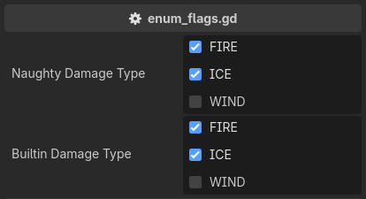

enum_flags
Provides a checkbox interface for setting enum flags on an int property.
Unlike the built-in @export_flags, which takes string literals, it takes the enum itself,
so the names and the values follow the declaration and a rename cannot leave it stale:
extends Node3D
enum DamageType { FIRE = 1, ICE = 2, WIND = 4 }
# Takes the enum itself, so the names and values follow the declaration.
@export_custom(PROPERTY_HINT_NONE, "enum_flags:DamageType")
var naughty_damage_type: int = DamageType.FIRE | DamageType.ICE
# The built-in annotation accepts only string literals, which a rename leaves stale.
@export_flags("FIRE:1", "ICE:2", "WIND:4")
var builtin_damage_type: int = DamageType.FIRE | DamageType.ICE

The widget is Godot’s own flags editor, handed the names and values read from the enum,
so it behaves exactly like @export_flags in every other respect.
The checkbox text is the enum name verbatim, and a member without an explicit value gets 1 << index.
Note
The enum is not sanity-checked beyond what only this attribute can know – a declared name,
an int property, and int values. A NONE = 0 member is an inert always-checked box
and a combined ALL = 7 member is a set-all box, the same as with the built-in.